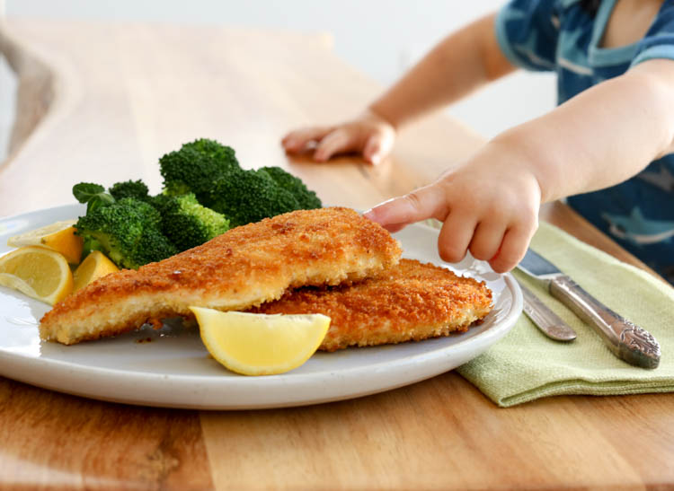

Chicken Milanesas

Description
Chicken milanesa is a simple dish, but one of the most delicious
lunchtime staples in Spain. Just take thin fillets of chicken
breast, coat them in breadcrumbs, and fry them in a shallow pan.
Usually served alongside a fresh garden salad, rice, boiled
potatoes, or homemade french fries, this is one hearty dish!
Ingredients
- 2 boneless chicken breasts
- 1/2 teaspoon garlic powder
- 1/2 teaspoon ground black pepper
- Pinch of salt
- 1 large egg
- 1 cup breadcrumbs
- 1/3 cup vegetable oil canola works too
- Lemon wedges to serve
Steps
-
To prepare the chicken, slice each of the breasts crosswise into
two thin fillets. Place in a zip-lock bag and bash with a meat
tenderizer or rolling pin to flatten out to about a 1/4-inch
thickness.
-
Take two medium-sized kitchen bowls. In the first, beat the egg.
In the second, combine the breadcrumbs with the garlic, pepper,
and salt.
-
Dip each chicken fillet in the egg, then in the breadcrumb mix,
and then place on a plate ready to fry.
-
To fry the chicken, place a large skillet over medium heat and
add the vegetable oil. When the oil is shimmering, fry the
chicken fillets for about 5 minutes on each side without
crowding the pan (you might only be able to do 1 or 2 at a time
depending on the size of the skillet). Place chicken on a plate
that has been covered with a paper towel to drain any excess
oil.
- Serve hot, with lemon wedges on the side.